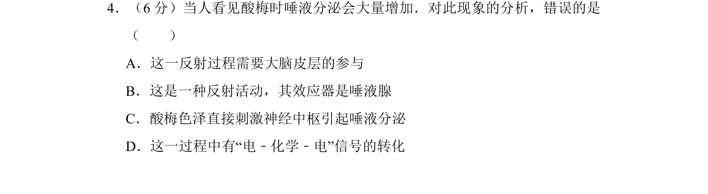
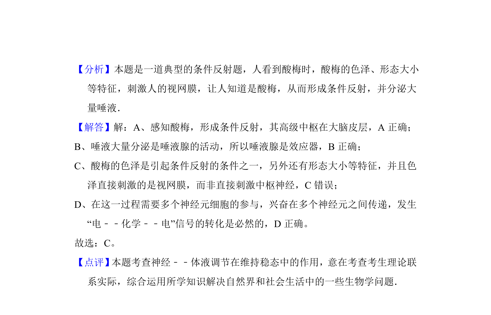

考点：反射弧 大脑皮层 效应器 电-化学-电信号

该题通过“望梅止渴”现象考查反射弧结构、神经调节过程及信号转化。

📄 原 PDF 第 3 页：
素材/真题/吉林/2008-2024·（吉林）生物高考真题/2012年高考生物试卷（新课标）（解析卷）.pdf
4．（6分）当人看见酸梅时唾液分泌会大量增加．对此现象的分析，错误的是 （ ） A．这一反射过程需要大脑皮层的参与 B．这是一种反射活动，其效应器是唾液腺 C．酸梅色泽直接刺激神经中枢引起唾液分泌 D．这一过程中有“电﹣化学﹣电”信号的转化
【考点】D5：人体神经调节的结构基础和调节过程．菁优网版权所有 【专题】33：归纳推理；532：神经调节与体液调节．